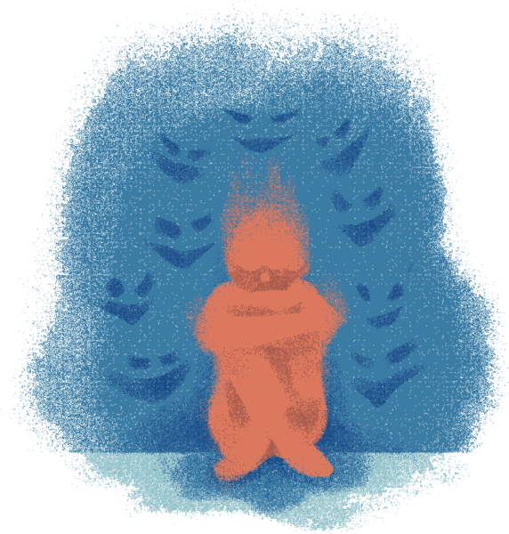
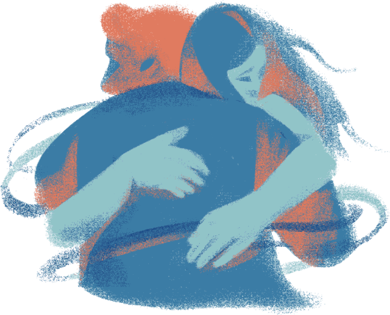

Section 1 · How common is it?
Almost half of all Australians will have a mental disorder at some point
The ABS National Study of Mental Health and Wellbeing interviewed Australians aged 16–85 between 2020 and 2022. It found that 43 in every 100 had experienced a mental disorder at some time in their life, and 22 in every 100 had symptoms in the 12 months before the interview.
A mental disorder here means an anxiety, mood (affective) or substance use disorder that meets clinical criteria. Each square is one person in 100.
What kinds of disorders?Anxiety disorders are the most common
Each rectangle is one type of mental disorder people had in the past 12 months; its area shows how many Australians aged 16–85 had it. Rectangles are grouped into anxiety, affective (mood) and substance use disorders. Social phobia (7.3%) and post-traumatic stress disorder (5.6%) are the most common single disorders.
Section 2 · Who is affected?
Young people, and young women most of all

Mental disorders are far more common among young adults than older Australians. Anxiety is the most common type at every age. Switch between groups to compare: 45.5% of women aged 16–24 had a disorder in the past 12 months, compared with 32.4% of men the same age.
Age group by mental disorder classification type (past 12 months)
Distress follows the same pattern
Psychological distress is measured with the K10, a ten-question survey about how often people felt nervous, hopeless, restless, sad or worthless in the past four weeks. Scores run from 10 to 50, and the ABS groups them into four levels.
A third of women aged 16–24 (34%) had high or very high distress, almost double the rate of men the same age (18%).
| K10 score | Distress level |
|---|---|
| 10–15 | Low |
| 16–21 | Moderate |
| 22–29 | High |
| 30–50 | Very high |
Distress level by age group
Section 3 · Change over time
More Australians report a mental health condition than ever
The ABS National Health Survey has asked the same questions since 2001. The share of people reporting a long-term mental or behavioural condition has almost tripled, from 9.6% to 26.1%. High distress among adults has risen more slowly, from 12.6% to 14.3%. Part of the rise may reflect people being more willing to talk about, and seek a diagnosis for, mental health problems.
People reporting a mental health condition or high distress, 2001–2022
Section 4 · Where in Australia?
Different states perform worse on different measures
Rates vary between states and territories, and which state looks "worst" depends on the measure. South Australia had the highest share of adults with high distress (17.0%), Queensland the most people with a long-term mental health condition (30.8%), and the Northern Territory the highest rate of mental disorders in the past 12 months (28.8%).
Use the menu below the map to switch indicators.

Mental health indicators by state and territory
Section 5 · Getting help
Less than half of people with a disorder see a professional
Of the 4.3 million Australians with a mental disorder in the past 12 months, 47% saw a GP, psychologist, psychiatrist or other health professional about their mental health. Men were less likely than women to get help, and older people least likely of all.
Who people saw for their mental health, by type of disorder
Who uses Medicare-subsidised mental health services?
In 2024–25, about 2.8 million Australians (10%) received a mental health service subsidised by Medicare, such as sessions with a psychologist under a GP's mental health plan. Females aged 18–34 use these services at almost twice the rate of males the same age.
People per 1,000 receiving Medicare mental health services, 2024–25 compared to 2015–16
Ten years on: growth came from young adults
Comparing the grey and coloured bars shows where the extra demand came from. Rates rose most for people aged 25–34 (up 21%) and 18–24 (up 17%). They barely moved for people aged 45–74. They fell for young children (down 36% for 0–4 year olds) and slightly for people over 75, even though older Australians with a disorder are already the least likely to get help.
A pandemic surge among young women
Section 6 · Services across the country
Access to Medicare mental health care is uneven
Comparing distress with service use shows a mismatch: South Australia and the Northern Territory have above-average distress but below-average use of Medicare mental health services. Victoria has had the highest rate of service use every year since 2015–16. The Northern Territory has had the lowest, partly because much of its care is delivered through Aboriginal community health services that Medicare data does not capture.
Where need and service use don't match
Medicare mental health service use in 88 regions, 2024–25
Each circle is an ABS Statistical Area Level 4 (SA4) region, such as "Melbourne – Inner" or "Far West and Orana". Circle area shows the number of people who received services; colour shows people per 1,000 residents. Most people who use services live in the capital cities, and rates are lowest in outback regions. Hover a circle for its name and numbers.
State rankings, 2015–16 to 2024–25
Section 7 · What the data suggests
What it means
It is common, and it starts young
About 1 in 5 Australians aged 16–85 had a mental disorder in the past year. Anxiety disorders are the most common type, and rates and distress peak among 16–24 year olds, especially young women.
1 in 5 Australians
Reported conditions keep rising
Long-term mental and behavioural conditions have risen in every National Health Survey since 2001, from about 1 in 10 people to more than 1 in 4.
Many people go without help
Less than half of people with a disorder saw a health professional. Men, older people and people in outback areas and the Northern Territory are the least likely to get Medicare-funded care.